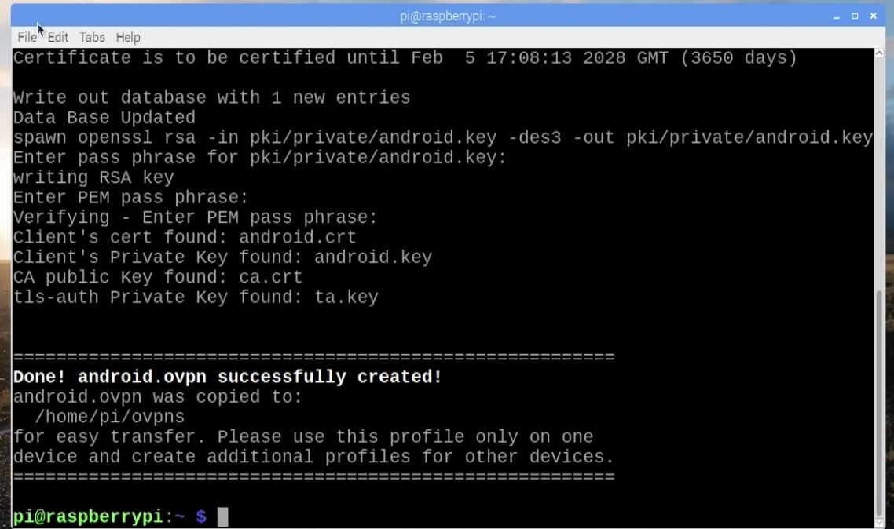
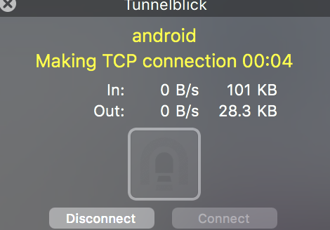

Qu'est-ce qu'un serveur internet?
Un serveur informatique est un dispositif informatique (matériel ou logiciel) qui offre des services a un ou plusieurs clients. Il fonctionne en permanence, et répond automatiquement aux requêtes provenant des clients avec lesquels il est connecté.
Les services les plus courants proposés par un serveur sont:
- L'accès au informations du World Wide Web
- L'envoi et la consultaiton de couriels
- Le partage d'imprimante (sur un réseau local, notamment)
- Le stockage d'informations en bases de données
- la gestion de l'authentification et du controle d'accès
- Le jeu et la mise à disposition de logiciels applicatifs

- - - - - -
♠ Que sont les Protocoles Internet? ♠La suite TCP/IP est le protocole standard utilisé par tous les systèmes qui se connectent à l'internet.
Le protocole IP est un protocole de plus bas niveau que le protocole TCP. Il propose un service de datagramme, sans connection, et une structure d'addresse pour le partage d'information. Le protocole IP permet de fragmenter de longs datagrammes en paquets numérotés, qui sont ensuite transmis et réassemblés chez le destinataire.
Le protocole TCP est un protocole de transfert de données qui permet le transfert d'informations de taille arbitraire, nommés segments. Le protocole assure que la réception des données se fera dans le même ordre que les données ont été envoyées. Ceci est permis par un échange constant d'informations entre le client et le server, ce dernier demandant une confirmation de réception après l'envoi de quelquonque portion du segment.
֍ ֍ ֍ ֍ ֍ ֍
♠ Qu'est-ce qu'une addresse IP? ♠
Une addresse IP est un numéro d'indentification qui est attribué de facon permanente, ou dynamque (via DHCP) à chaque périphérique relié à un réseau informatique qui utilise les protocoles de la famille TCP/IP. Ces addresses varient en longueur, les plus communes mesurant 32 bits (IPv4) ou 128 bits (IPv6).
۞ ۞ ۞ ۞ ۞ ۞
♠ Qu'est-ce qu'un port? ♠
Un port est un point a partir duquel des données peuvent entrer ou sortir d'un réseau. Les ports de communication permettent notamment de se connecter a une interface de communication et d'échanger des informations avec d'autres ordinateurs ou systèmes électroniques. Ce terme est applicable aux interfaces réseau et aux interfaces DTE (Data Terminal Equipment), tel un ordinateur connecté a internet, une imprimante réseau, un terminal, etc.).
࿓ ࿓ ࿓ ࿓ ࿓ ࿓
♠ Qu'est-ce qu'un réseau? ♠
Un réseau est un dispositif qui est composé de nombreux terminaux, noeuds, et méthodes de connection qui peuvent inclure des lignes physiques mais aussi des satellites, des micro-ondes, des ondes radios, etc. En général, un réseau est une collection de ressources et est utilisé pour établir et gérer les voies de communication entre les terminaux qui composent ledit réseau.
Un masque de sous-réseau est une spécification de la partie d'une addresse IP qui représente l'identitée du réseau. Il s'agit d'un bitmap de 32 bits dans lequel chaque position ou le bit vaut 1 fait partie de l'identité du réseau. Ainsi, dans une addresse ipv4, le masque 255.255.255.0 montre que les trois premiers nombres appartiennent au masque et que le quatrième est variable, et change selon l'adresse de l'hote.
Un sous-réseau est une partie identifiable d'un réseau. La division d'un réseau en sous-réseau permet de créer des réseaux adaptés au besoins d'une entreprise en fonction des taches que doit remplir le réseau et de la division du travail au sein de l'entreprise.

ᚖ ᚖ ᚖ ᚖ ᚖ ᚖ
♠ Qu'est-ce qu'un serveur proxy? ♠
Un serveur proxy est un appareil qui gère le traffic internet pour un autre appareil. Un client envoie une requête à un proxy, qui la relaie à un serveur, qui, lui, voit le proxy comme un client. La réponse du serveur est ensuite renvoyée au proxy, et, de ce dernier, au client. Les proxys sont généralement utilisés conjointement a un firewall, pour permettre l'utilisation de protocoles complexes, pour examiner les requêtes et les réponses internet, pour acheminer les requêtes via un autre serveur, ou filter les réponses aux requêtes émises.
ᛤ ᛤ ᛤ ᛤ ᛤ ᛤ
♠ Qu'est-ce qu'un VPN? ♠
Un VPN est une connection entre deux ordinateurs ou autres appareils au sein de laquelle toute information envoyée sur un réseau partagé, tel que l'internet, et chiffrée et déchiffrée, par les l'émetteur et le récepteur, respectivement. Alors que les informations sont partagées sur un réseau ouvert, ces dernières sont protégées, grace au VPN, pendant le cheminement de l'emmeteur et le destinataire.
Les VPN permettent de protéger des informations confidentielles sur un réseau ouvert, accéder a un intranet depuis un point extérieur, ou tromper un serveur quant à sa localisation, par exemple.

⛥ ⛥ ⛥ ⛥ ⛥ ⛥
- - - VPN SUR RARSPBERRY PI - - -
♠ Introduction ♠
Afin d'installer un VPN sur notre Raspberry Pi, nous avons choisit d'utiliser le logiciel PiVPN. Il nous permet de configurer et installer sur la Raspberry Pi un serveur OpenVPN
♠ Qu'est ce que OpenVPN? ♠
OpenVPN est un logiciel (open-source en plus) utilisant des méthodes de VPN pour créer une connection point à point, ou entre deux sites sécurisée.
♠ Télécharger PiVPN ♠
Notre raspberry pi était sous le système d’exploitation Raspbian OS qui avait une interface graphique intégrée. Pour une installation plus rapide nous recommandons la version lite, où tout se fait en headless (c’est-à-dire seulement en utilisant le terminal de la raspberry pi).
En premier, nous avons installé PiVPN en utilisant la commande suivante:
curl -L https://install.pivpn.io l bash
Curl est une commande permettant de transférer de l’information vers un serveur ou d’en recevoir. Ici, nous recevons l’information stocké à install.pivpn.io, qui est le logiciel en question que nous voulons. Il est important de comprendre que cette commande peut être dangereuse lorsqu’on ne connait pas la source que l’on cible avec curl.
♠ Configuration du VPN ♠
PiVPN configure la Raspberry Pi de sorte que nous avons une adresse IP statique. Comme ça si jamais nous redémarrons la Raspberry Pi, celle ci ne changera pas d’adresse IP.
Nous avons activé les mises à jour de sécurité. Cela est très important puisque nous allons ouvrir un port sur notre routeur pour rediriger la Raspberry Pi vers internet et ainsi créer de potentielles vulnérabilités.
Nous avons ensuite changé le port par défaut proposé par PiVPN. Cela ajoute également une couche de sécurité puisque certaines attaques se font en scannant les ports par défaut.
À présent, il est temps de créer la clé d’encryption. Nous avions le choix entre créer une clé RSA de 1024, 2048 ou 4096 bits d’encryption. Plus la clé aura nombre de bits d’encryptions élevée, plus elle prendra du temps à être générée et sera par conséquent plus sécurisée. Comme nous utilisions une Raspberry Pi 3 B+, nous aurions pu choisir une encryption à 4096 bits, mais nous avons opté pour 2048 à la fin, qui a prit environ 3 minutes à générer.
Nous devions maintenant choisir entre une adresse IP publique ou un DNS pour notre configuration DNS
Définition du DNS (Domain Name System): protocole d’association entre l’URL d’un site (exemple: www.google.com) en adresse IP, que l’ordinateur sait reconnaître pour communiquer avec le serveur hébergeant ce site.
Note: si le but d'un VPN est d’avoir une confidentialité dans les informations privées, il est important d’être conscient du fait que certains fournisseurs DNS enregistrent leurs informations et créent des set de données sur les individus.
C'est la fin de la configuration du VPN, nous redémarrons notre Raspberry Pi à présent, question de principe…
♠ Créer le fichier client OpenVPN ♠
Nous devons maintenant créer un fichier client OpenVPN, nous avons fait cela avec la commande:
pivpn add
Nous choisissons android.ovpn comme nom, nous devons également choisir un mot de passe, nous recommandons un mot de passe long et compliqué.
Une fois que la clé est crée, il ne reste plus que la transférer sur l’appareil sur lequel on souhaite avoir le VPN.
♠ Transférer le fichier ♠
Pour le transférer, nous avons une technique assez efficace: Il suffit de faire passer la Raspberry Pi en Serveur HTTP Simple temporaire avec la commande (toujours dans le terminal):
python -m SimpleHTTPServer 8080 (Cela ne marche que avec python installé bien entendu)
En se connectant avec un appareil à l’adresse IP de la Raspberri Pi, sur le port 8080, nous pouvons directement télécharger le fichier android.ovpn!
♠ Conclusion ♠
Une fois le fichier client Open VPN sur l’appareil, il suffit de l’utiliser avec un client Open VPN, il en existe beaucoup. Pour Windows, il y a OpenVPN, pour android, il y a OpenVPN Connect et pour Mac nous recommandons Tunnelblick.
♠ Problèmes... ♠
Au final, il y avait un problème lorsque l'on a essayé d'établir une connection entre notre appareil et la Raspberry Pi. Nous avons essayé de nous connecter sur le serveur VPN via des ordinateurs Windows et Mac, avec OpenVPN et TunnelBlick, ainsi que avec un téléphone android avec OpenVPN Connect. Dans tout ces cas de figures, il n'y avait pas de messages d'erreur, mais les logs affichaient qu'ils étaient en attentent.
Voici ce que TunnelBick affiche(le compteur allait jusqu'à 10 minutes puis la fenêtre se ferme):
Cette erreur pourrait avoir plusieurs sources, que nous avons pour la plupart testées.
Première source d'erreur: Nous travaillons sur le réseau de notre école, qui pourrait avoir certaines restrictions pour ce genre de logiciels. Nous avons donc essayés de faire un partage de connexion à notre Raspberry Pi grâce à un téléphone, qui lui ne pouvait avoir de restriction puisque le partage n'a pas été configuré au préalable (en particulier sur les iPhones). Cependant, cela ne changea rien au message d'erreur que nous recevions.